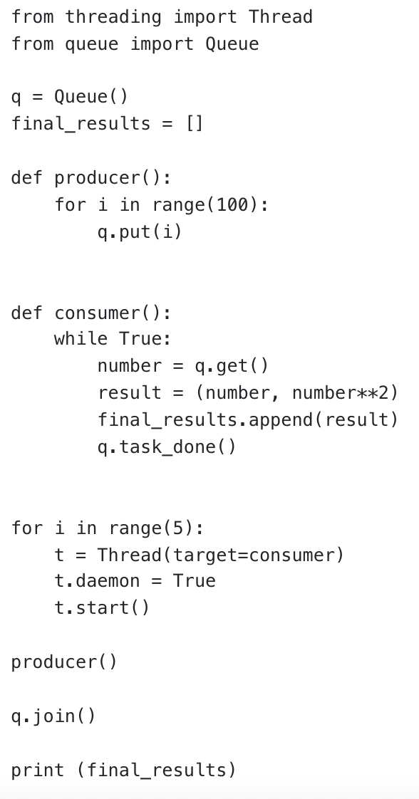

Codio Activity - Producer and Consumer Mechanism
Source Code:

The queue is a FIFO simple list structure.
The purpose of q.put(I) is adding the pending task to the queue.
The q.get() is used for getting the first pending task from the queue.
The q.join() method blocks the main thread to proceed the next step until all pending tasks have been taken and proceed.